What is the best strategy?
Analyzing a Game
Have you ever watched someone win a game again and again? Do you think that person just has good luck? In many cases, winners have strategies that increase their chances of winning. How can you develop a winning strategy? Today you will start to answer this question. Later in this course, you will learn more about analyzing a game.
Throughout this course, it will be important for you to describe and explain your ideas. In this lesson, you will play a game called Color-Rama. As you play, describe any patterns that you notice. Also explain your thinking about why certain choices might be better than others. Paying close attention to what is happening as you play can give you ideas for developing a winning strategy.
COLOR-RAMA
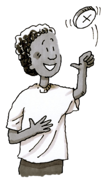
Your teacher will challenge your class to a game of Color-Rama! Explore using the 1-7 Student eTool  game. To play, a marker will be placed on the orange space on the board below. Your class will need to select one color for your class and a different color for your teacher. Then a volunteer will flip a coin three times. The coin has a “” on one side and a “” on the other side. If the coin lands with the “” showing, the marker will move one space to the right. If the “” is showing, then the marker will move one space to the left. If the marker is on your class’s color after three flips, your class wins. If it lands on a color no one picked, then no one wins. Which color do you think you should choose? Do you think that there is a way to predict which color the marker will land on after three moves?
game. To play, a marker will be placed on the orange space on the board below. Your class will need to select one color for your class and a different color for your teacher. Then a volunteer will flip a coin three times. The coin has a “” on one side and a “” on the other side. If the coin lands with the “” showing, the marker will move one space to the right. If the “” is showing, then the marker will move one space to the left. If the marker is on your class’s color after three flips, your class wins. If it lands on a color no one picked, then no one wins. Which color do you think you should choose? Do you think that there is a way to predict which color the marker will land on after three moves?
Before you play, discuss the questions below with your team. When talking about strategies, be sure to describe your ideas and explain your reasoning. When your class has considered these questions, move on to problem 1-8.
Discussion Points
Does it matter which color is chosen?
Are all the colors equally likely to win? How can you decide?
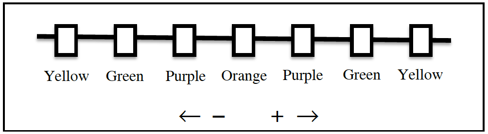
LEARNING MORE ABOUT THE GAME
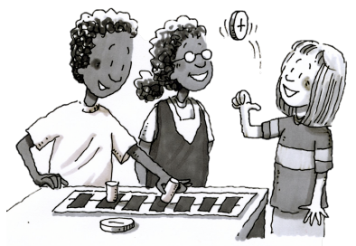
Do you think one color is a better choice than the others if you want to win? Is there a color that you should not pick? One way to answer these questions is to play the game and keep track of what happens.
Your teacher will give you and a partner a Lesson 1.1.2A Resource Page and a coin with a “” on one side and a “” on the other side. You will need a small object such as an eraser or paper clip to use as a marker. Once you have all of your supplies, follow the directions below.
Play the game several times and be sure to select a different color each time. Keep track of which colors win and lose each time, not just which partner wins. What do you notice?
After you and your partner have played the game at least five times, join with another pair of students to form a team and discuss the following questions:
Does the color you choose seem to affect your chances of winning?
Is each color choice equally likely to result in a win? Explain why or why not in as many ways as you can.
Play the game a few more times. Do your results agree with your answers from part (b) above? Why do your results make sense?
PLAYING THE GAME
Now you get to play the game! As a class, choose two colors (one for your class, one for your teacher) that you think will improve the class’s chance of winning.
Is there any color you could choose that would guarantee your winning the game every time you play? Explain why or why not.
Is there a color that would guarantee that you would not win? Explain why or why not.
In general, what makes a game fair? Discuss this question with your partner. Then think about whether there is a way to change the rules of Color-Rama to make it a fair game. Decide on any changes to the rules that you would recommend.
Play the game a few times with your new rules. Be prepared to describe the changes you made and explain your reasons for making the changes.
Is your new game fair? If not, could you make it fair? Work with your team to find a way to explain how you know your game is fair or why you cannot make it fair.
Methods & Meanings
Perimeter and Area
Area of a Rectangle (YouTube) (Vimeo) 
The perimeter of a shape is the total length of the boundary (around the shape) that encloses the interior (inside) region on a flat surface. See the examples below.
tile | tile | ||||
tile | tile | tile | tile | tile | tile |
tile | tile | tile |
Perimeter
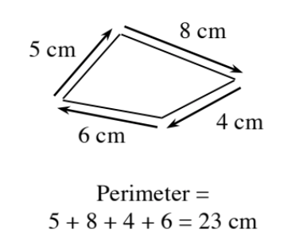
Area is a measure of the number of square units needed to cover a region on a flat surface. See the examples below.
tile | tile | ||||
tile | tile | tile | tile | tile | tile |
tile | tile | tile |
Area
The area of a rectangle is found by multiplying the lengths of the base and height. See the examples below.
left edge | tile | tile | tile | tile | tile |
tile | tile | tile | tile | tile | |
tile | tile | tile | tile | tile | |
bottom edge | |||||
left edge | rectangle interior | ||||
bottom edge | |||||
Area (square meters)
The area of a parallelogram is equal to the area of a rectangle with the same base and height. If the base of the parallelogram is length and the height is length , then the area of the parallelogram is:
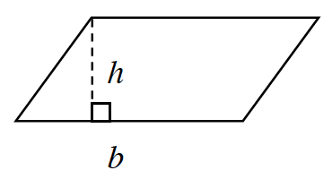
The area of a triangle is half the area of a parallelogram with the same base and height. If the base of the triangle is length and the height is length , then the area of the triangle is:
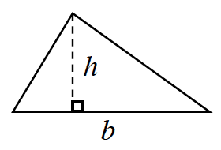
The area of a trapezoid is found by averaging the two bases and multiplying by the height. If the trapezoid has bases and and height , then the area is:
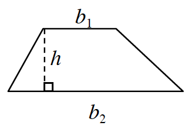
Review & Preview
Find the perimeter and area of each figure below. Review the Math Notes box in this lesson for help. Be sure to include the correct units in your answers.
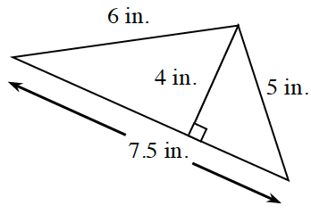
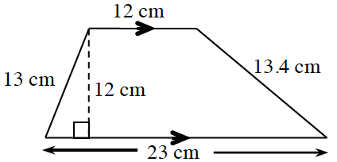
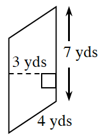
Think about games that you can remember playing with your friends or family.
Talk with your family and/or friends and list as many games as you can think of.
Label each game on your list as "fair," "unfair," or "I'm not sure." For any game that you think is unfair, write down your reasons.
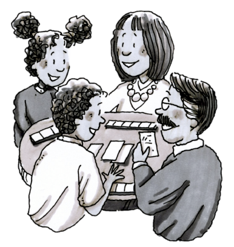
For each of the following pairs of events, predict which is more likely and explain your reasoning.
Event 1: You will win more than in a lottery sometime in your life.
Event 2: You will learn to speak a language that you do not already know.Event 1: Your classmates will all wear the same kind of shoes on the same day.
Event 2: Your classmates will all eat the same thing for lunch on the same day.
Copy the number line below onto your paper. Place a point on the number line and label the point for each of the following numbers: , , , , , , , .
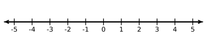
Maria was playing a game with her brother. She said, “I’m thinking of a number. When you multiply my number by six and add seven, you get twenty-five. What is my number?”
Find Maria’s number.
Explain how you figured out your answer to Maria’s number puzzle.